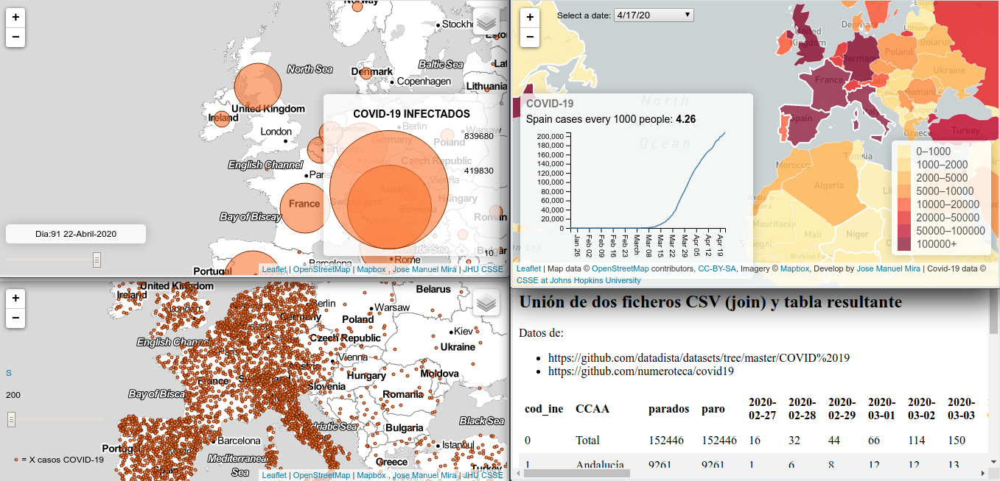
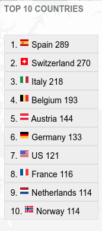
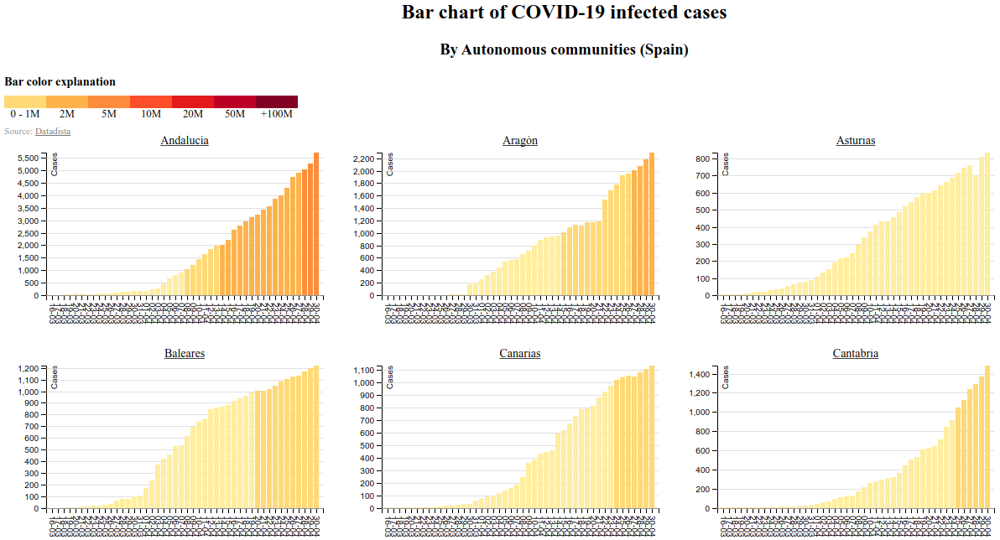

COVID-19 interactive maps.
Versión en ESPAÑOL
If you don't want to read more, you can see this all demos:
With dinamic maps (choosing date):
- Custom dot density map (world)
- Map of infected cases (World)
- Map of infected cases per 1.000 people (World)
- Map of infected cases per 100.000 people (World) + TOP10
- Map of infected cases per 100.000 people (World) + TOP10 + video animación
- Map of deaths cases (World)
- Deaths map per millon people (World)
- Infected map by Autonomous Community (Spain)
- Graduated symbol map with infected cases (World)
Given the world situation in which we find ourselves (April 2020), where the population is confined to their homes (the case of Spain) I have wanted to take advantage of the time available to research the possibilities of cartography to offer information in a more attractive way than the cold tables of figures.
The starting point of this project was and is to offer developers the ability to display mapping on their respective portals in an easy and unattended manner. For this reason the cartography had to fulfill the following requirements:
- Use a 100% free maps API. In this sense I have chosen to use Leaflet as an engine to publish the maps
- The rest of the Javascript libraries used are also in the public domain, and their use by developers is very common. Mainly I have used: D3 and JQuery. The only JS library that is really spatially geoprocessed is the excellent Turf.js tool
- The geographic data must be in a format that is also free and widespread in the world of geomatics. In this sense, the "GeoJSON" format. I have used 2 very simplified data sets, with few vertices, so that their loading is fast
- Statistical data comes from public and open sources, and is available in CSV format. At no time have I downloaded the data to process them. These are connected by AJAX from their respective servers, making a union between columns online (JOIN in GIS terminology). The updating of the data is therefore that of these sources. So far (April 18, 2020) this is daily. The sources I have used are:
Study cases
Create a GeoJSON file "on fly" from CSV data with cordinates
This example does not contain cartography, but shows the capabilities to generate a GeoJSON with all the data "on the fly".
If you want to see the result you can copy the result to the clipboard and view it in the viewer http://geojson.io
Union of 2 CSV files (on the fly) and generation of HTML table
This example also does not contain mapping, but shows the capabilities to perform a two table join (CSV) that have in common the content of a column (which is not the same as the name of the column). For example we have a table with a list of administrative units (for example municipalities), with a column with its code -in the case of Spain it is the INE code -. This table is joined with another that also has a column with that code.
Dot density map
These types of maps are no longer very common, but it must be recognized that together with their simplicity is the ability to clearly communicate a phenomenon. Many of us have seen the typical dot map, where a point represents a certain number of elements (people, votes, ...). Well, this example taken to the COVID-19 case gives us an idea of how the same data (cases) changes its interpretation depending on the number of elements that identify a point.
Let's see an example from Spain, for values of 200, 1000 and 5000 cases per point.
This website has a slider control to select the number of cases for each point. It's at the bottom left.
Choropetic map of a date chosen by the user
The idea that inspired me to make this map is again the union of files, in this case a CSV with the cases of COVID-19 with a GeoJSON of polygons with the countries. I wanted to take advantage of that in the CSV file all cases were collected by country from the beginning of the records (January 22) to the present, to add a dropdown combo with the dates so that the user can see the evolution of the pandemic.
For the data to be comparative between dates, the legend is fixed, so that in the first days it seems that nothing is happening
I also wanted to include a linear graph about the evolution of the pandemic in each country, activating the effect when you position yourself above the element (hover), also making use of the excellent library D3.js.
Choropleth map by Autonomous Communities (Spain).
It is the same example as the previous one, with another local data source and assigned to another corollary level, in this example we refer to those affected by COVID-19 in each Autonomous Community

Unfortunately, as the number of cases continues, the map will be single-color, unless the value of the class intervals changes.
Choropleth map of COVID-19 deaths by country
It is the same example as that of the countries but with deaths.
One aspect to note is that by being able to use the columns of two data sets, you can create calculated fields. In this case, you can see in the graph how the figure of the deaths per million people
This map hava a new utility to list top 10 countries with cases every millon of people
Finally I have created an option to see an animation, in the form of a video , to understand the evolution of the pandemic since we have data
|
Graduated symbol map
Undoubtedly this is the most impressive map, where we can see by dates (slider at the bottom) how it is evolving contacts, but displayed as a graduated symbol.
I want to thank the interesting article"Time Series Proportional Symbol Maps with Leaflet and jQuery que me ha permitido realizar este mapa
|Multiple bar charts
I am more and more satisfied with the possibilities of the D3.js library. Your ability to do graphics is amazing
In this example I use the data from a CSV with Covid-19 affected by Autonomous Communities (Spain) to obtain a graph for each of them, also including differentiation of bars by color to facilitate interpreting the graph and unifying values.
|Interest links
This proyect use this JS library or data
- Leaflet JS: awesome api maps
- TurJS: Spatial geoprocesing with Javascript
- D3: Great library to data management a graphics
- OpenStreetMap: The colaborative open world map
- A modern JavaScript utility library delivering modularity, performance & extras
- Johns Hopkins University - Center for Systems Science and Engineering
- Periodismo de investigación, datos y nuevas narrativas para salir del ruido
Author y contributions
The examples on this website have been made by José Manuel Mira Martínez. If code from another free project has been used, it's quoted on source code.
Contact
You can contact with me in this e-mail: josema.mira@gmail.com